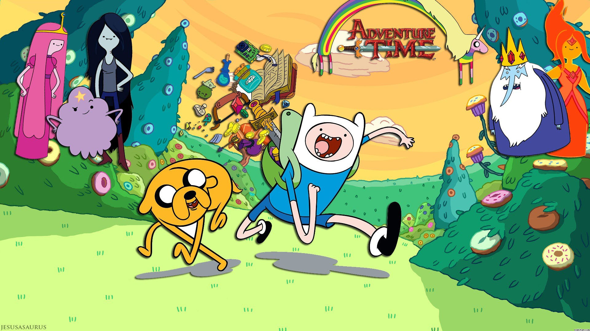

Finn the Human
About Finn
Finn is a human who lives in the land of Oo. Together with his best friend Jake the dog, he fights bad guys and saves the many inhabitants of Oo.
Finn and others in Oo
Finn's Characteristics
- He lives in an epic treehouse
- He has cool swords to fight bad guys with
- He occassionally has crushes on princesses
Finn's Friends and Allies
While Finn is very valient, he cannot fight all the evil beings of Oo alone. He has many friends who help him keep the inhabitants of Oo safe from harm. Click on the links below to find out more about them.
Finn's Enemies
- The Ice King
- Orgalorg
- Various monsters of Oo